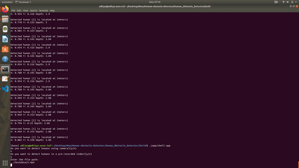

This project includes detection of ARtags decoding their orientation and imposing an image
on the tag. Further the pipeline is extended to place a 3D cube on the tag by estimating
pose matrix.
Histogram Equalization
The goal of this project is to have an equalized histogram and thus the new pixel intensities are
computed using the cumulative distribution function(CDF). For a BGR frame the color channels are separated
and for each channel a CDF is computed which results in a noisy frame but equalized histogram. To adrress
this problem the histogram equalization is often carried out in the HSV color scheme and only on the V
channel.
Lane Detection with Turn Prediction
To detect the lane, the region of interest in the frame in front of the vehicle is extracted. Bird's eye
view of the lane in front of the vehicle is obtained and is then masked in the HSV color scheme to get the
lanes in the top view. A column wise histogram is plotted to obtain the columns that contain the possible
lane candidates. Once the lanes are obtained, a polygon is fitted between the detected the lanes to mark
the lane. The detected lane is then reimposed on the main frame. The turn is predicted by finding the
difference of the centers of the lanes at the top and bottom of the detected lame in the bird's eye view.
Multiview Geometry Depth Estimation
This project's goal is to compute a disparity and a depth map from two given images. Initially the fundamental
matrix calculated using RANSAC. The possible rotation matrices and translation vectors are obtained from the
essential matrix. The final pose matrix is found by triangulating the points and checking whehter the points is
behind or in front of the camera.
Principal Component Analysis
In Principal Component Analysis the data is projected on directions that can best represent the data with minimum
loss in the information and thus dimensionality reduction is achieved. Inother words, we can say that by reducing
the number of dimnensions we still try to preserve the trends in the data. This is obtained by minimizing the squared
error between the data and the projected data which is evaluates to a maximization problem whose solution is otained
by computing the eigenvector of the covariance matrix of the data.
Multiple Discriminant Analysis
Just like PCA, MDA is also a dimensionality reduction technique. The major difference between PCA and MDA is that while
PCA tries to find the direction that can best represent the data, MDA finds a direction that can best possibly separate
the given data. For example if we have to reduce the dimensionality of images that contain the letters "O" and "Q", PCA
will try to maintain the data of the ring of the letters whereas MDA will try to distinguish the two letters by finding
the line in the letter "Q". In MDA, the number of dimensions on which we can project the data can be at the most equal to
the number of classes minus one.
Bayes Classifier
The faces are classified by assuming gaussian distribution of the classes and estimating the maximum likelihood values
of the parameters for each class which is followed by Bayes Classification. This is achieved by computing the posterior
probabilites for each class given a test sample.
k Nearest Neighbors
This is a simple classifier that will classify the data based on the k nearest neighbors to it. the letter "k" is used
to denote that it can be any integer.
Support Vector Machines
SVMs are supervised learning models that can be used for bilinear classification. Given a set of training examples,
each marked as belonging to one of two categories, an SVM training algorithm builds a model that assigns new examples
to one category or the other, making it a non-probabilistic binary linear classifier. This method leverages reproducing
kernel hilbert spaces to solve the problem in giher dimensions where the data can be linearly separated. In this project,
polynomial and RBF kernels have been used.
Boosted SVM
Boosting works on the principle that many weak classifiers when combined can result in a good classifier. While combining
the classifiers, the next classifiers are only provided with the data that the previous classifiers made an error with.
15 Puzzle Problem
This is a 15 piece puzzle solver which uses Breadth First Search method to find the soltion to a given state. It also
provides detailed steps required to take to reach the goal state.
Breadth First Search
This is a planning method used to find path for a point robot so that it can navigate to the required goal while
avoiding the obstacles in the area.
Dijkstra's Algorithm
This is planner will always find the best path (lowest cost path) for the robot to reach the goal state. It has been
implemented for a rigid robot.
Astar Algorithm
Astar algorithm is a greedy search algorithm that finds a good path in a very short amount of time but the path found may not
always be the best path for the robot. For this project differential drive contraints have been used and a ROS package hase been
developed that enables Turtlebot to navigate in the world while avoiding the obstacles.
Rapidly Exploring Random Tree (RRT*)
This is a random sampling planning method that can provide the shortest possible path when the number of sample nodes approach
infinity. It is an optimized version of RRT algorithm as it rewires the tree if a newly found node can reduce the cost of reaching
the other nodes.

Human Obstacle Detector
This project attempts to implement a Perception module for ACME Robotics using high-quality software engineering
practices such as the Agile Iterative Process, Object Oriented Programming, Pair Programming and Test Driven
Development. We attempt to achieve robust human detection using Histogram of Oriented Gradients (HOG) feature
descriptor combined with a Support Vector Machine Model. The algorithm uses HOG features extracted from the
input data to detect Humans and surround them with rectangular bounding boxes, the centers of which act as
the pixel coordinates of the detected humans.
Team Taurus at Vishwakarma Institute of Technology
International Series of Karting and National Kart Racing Championship are competitions held in India where
about 100 - 150 teams participate. In the competition each team is not only supposed to design and manufacture their
own gokart but also present a business model while abiding to the rules of the competition. At team Taurus, I was
involved as the head member for Engine and Transmission sub-system. I was responsible for designing the complete drive
train for the kart.